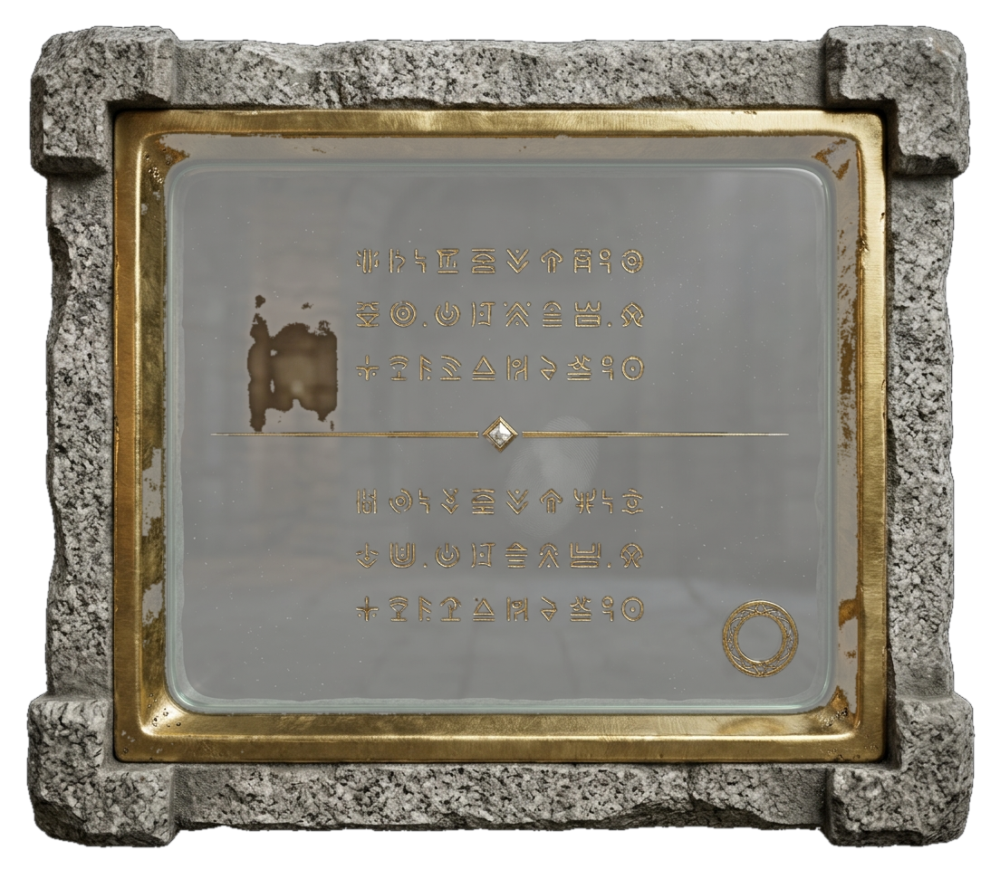
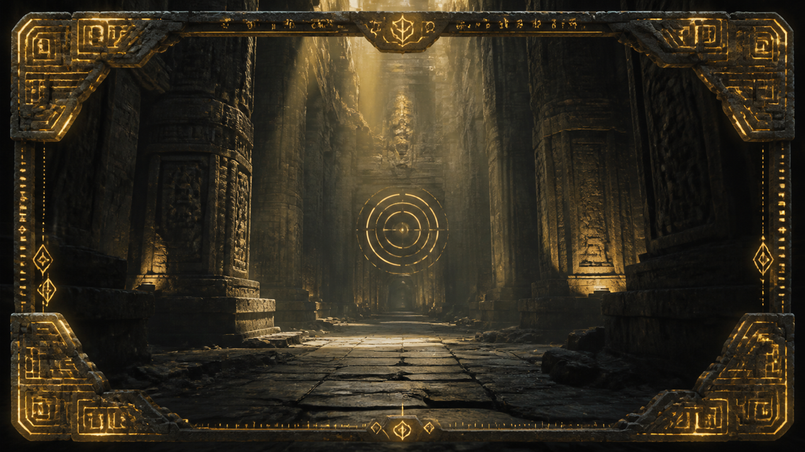

This is the photoreal render cut out with a transparent glass centre and mapped onto one flat plane - no geometry, no 3D model. Turn it and move it to see where that holds and where it stops holding.
What to look for. Head-on it is indistinguishable from the render. The tells appear only when the card is BOTH close and turned past about 45°: the frame has no thickness, the corner blocks stop overhanging, and the bright edge on the gold stays on the same side instead of moving as the light should. At the size the card actually appears in AR, none of that is visible - which is the whole argument for a quad.